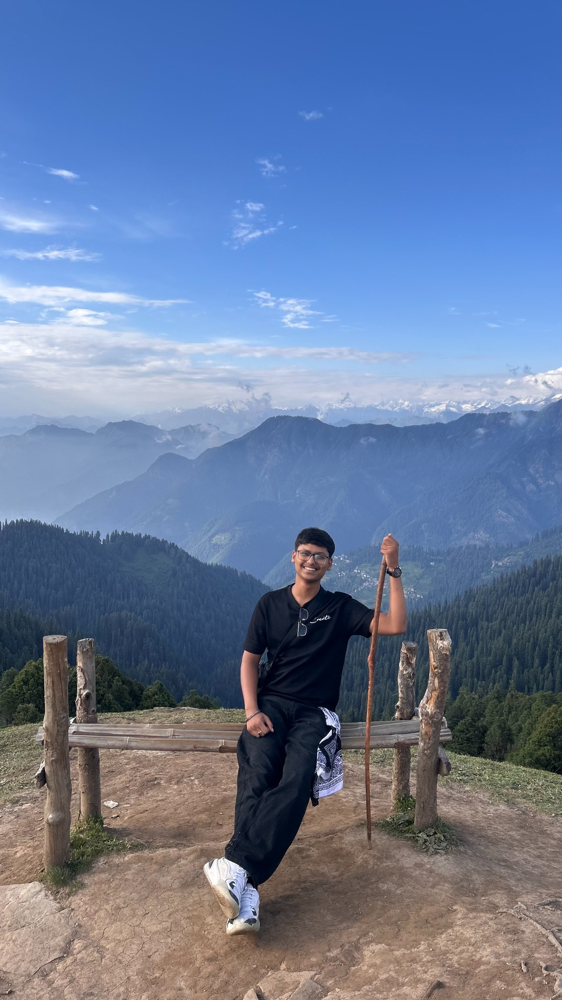

Bachelor of Business Administration
Nirma University
Building a foundation in management and business, and learning to solve problems with other people.
BBA student at Nirma University and IIM Bangalore.
I'm studying management, digital business and entrepreneurship. I like projects that connect what we learn in class with problems we can see around us.
About me
I'm studying for two BBA degrees: one at Nirma University and one through IIM Bangalore's BBA in Digital Business and Entrepreneurship. Doing both lets me look at business from two different angles.
I enjoy assignments that link classroom topics to things happening around us. Social issues, entrepreneurship and the way businesses respond to everyday needs are the areas I want to understand better.
Different perspectives do not divide us; our inability to celebrate them does. From my social diversity assignment
Nirma University
Building a foundation in management and business, and learning to solve problems with other people.
Indian Institute of Management Bangalore
Learning how digital business and entrepreneurship work, through a structured academic programme.
I helped with outreach drives and with education and hygiene-awareness activities. It showed me that change takes patience, consistency and trust.
My documentary looked at how surplus food could become an opportunity for social entrepreneurs to reduce hunger and protect the environment.
The main thing I took from this assignment is that differences do not divide us; our inability to celebrate them does.
Finding the human outcomes behind business challenges.
Exploring how technology changes opportunity.
Making space for different voices and experiences.
Knowing that real change takes time.